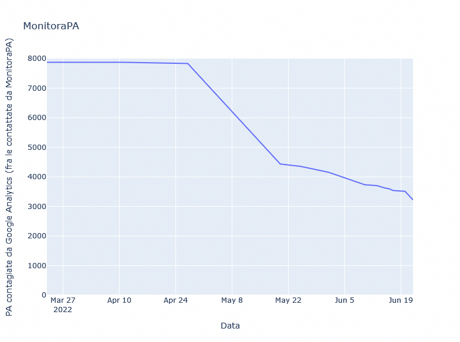

Come preannunciato alle Pubbliche Amministrazioni che abbiamo contattato nelle settimane scorse, alle 12:34:56 del 22 giugno 2022 abbiamo inviato una segnalazione ufficiale all'Autorità Garante per la Protezione dei Dati Personali, riguardante le 3230 PA che a distanza di quasi due anni dalla sentenza Schrems II del 16 luglio 2020 continuano a trasferire, tramite Google Analytics, i dati personali di milioni di persone senza adottare efficaci misure tecnice supplementari per proteggerli:
Segnalazione al Garante Allegato Tecnico
Dopo una brevissima introduzione sul progetto Monitora PA e sulle precedenti comunicazioni ricevute dagli Enti in questione, la segnalazione prosegue con una breve panoramica del contesto giurisprudenziale di riferimento e dei gravi danni che l'uso di Google Analytics ha inferto ai cittadini italiani che hanno visitato i loro siti web istituzionali.
A supporto della segnalazione, l'allegato tecnico introduce brevemente il software Google Analytics, analizza puntualmente i diversi trasferimenti determinati dalla sua introduzione su un sito (soffermandosi in particolare sulla grave compromissione della riservatezza delle comunicazioni fra enti pubblici e cittadini che questo software determina), per poi spiegare le ragioni tecniche dell'inadeguatezza e dell'inefficacia delle misure di anonimizzazione e delle altre mitigazioni proposte o ventilate da Google.
La segnalazione si conclude chiedendo all'Autorità di Garanzia di esercitare le proprie prerogative con interventi forti e duraturi a protezione dei diritti dei cittadini italiani, fra cui:
l'imposizione di un'immediata interruzione di qualunque flusso di dati tra le PA segnalate e Google, ai sensi dell'Articolo 58(2)(f) del GDPR l'apertura di un istruttoria in proposito, ai sensi e per gli effetti dell'art. 58 del GDPR e dell'art. 144 del Codice in materia di protezione dei dati personali; l'imposizione di una sanzione pecuniaria effettiva, proporzionata e dissuasiva nei confronti dei Titolari e di Google come previsto dall’articolo 83(5)(c) del GDPR.
A fronte delle solide basi giuridiche e tecniche su cui poggia la nostra segnalazione nonché della gravità dei trasferimenti illegittimi in essa evidenziati, non esitiamo a credere che l'Autorità Garante per la Protezione dei Dati Personali darà grande priorità alla loro interruzione.
Al nostro fianco in queste richieste, oltre alle associazioni che ci sostengono ed alle 400 persone che ci aiutano sulla nostra chat Matrix / Telegram, contiamo le migliaia di Pubbliche Amministrazioni che hanno già risposto positivamente al nostro appello.
Si può fare a meno di Google. Si deve.
